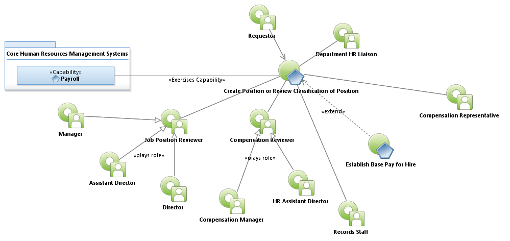
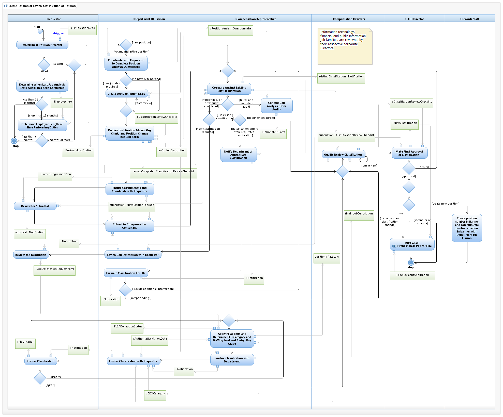

Use Case Model: Create Position or Review Classification of Position
Architect: Aaron Brown, IT Enterprise Architect Senior
Date Last Modified: 03/26/2013
User Review: Holly Moyer, Sharon Huckabee
Date: 03/26/2013
If a Job analysis (desk audit) has not occurred within last 12 months, Based on department needs (for a new classification or a reclassification), the Department Requestor performs a position analysis using the Position Analysis Questionnaire (PAQ). if the employee has been performing the job duties for 6 months or more. , the Department HR Liaison prepares the Justification Memo, organization chart, Draft Job Description (if applicable), and position change request form. They may additionally provide the PAQ. The compensation representative compares the duties included in the request to existing Classifications, and conducts a job analysis if the position is filled. If a comparable Classification is found, a recommendation by the compensation representative is provide to the Department HR Liaison. If a comparable position is not found, the compensation representative will create a new Classification, and draft a job description based upon Market, Internal Job Equity, FLSA Status, EEO Category, minimum qualifications, knowledge, skills and abilities. The Compensation Representative consults with the Department HR Liaison to finalize the classification and job description. If a new classification is requested the HR Director has the final approval decision. If the position is filled, the Establish Base Pay process is followed.
Follow link to Role Definitions

Use Case Model: Create Position or Review Classification of Position
Follow link to Establish Base Pay

Activity Model: Create Position or Review Classification of Position